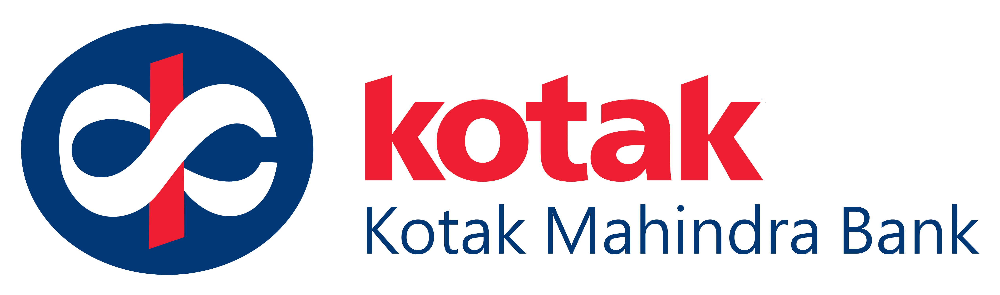

Kotak Manhendra Bank./css/
Kotak Mahindra Bank Limited is an Indian banking and financial services company headquartered in the city of Mumbai, India. It offers banking products and financial services for corporate and retail customers in the areas of personal finance, investment banking, life insurance, and wealth management. It is India's third largest private sector bank by assets and by market capitalisation as of November 2021. As of February 2021, the bank has 1600 branches and 2519 ATMs.[5]
History
In 1985, Uday Kotak founded what later became an Indian financial services conglomerate.[6] In February 2003, Kotak Mahindra Finance Ltd. (KMFL), the group's flagship company, received a banking licence from the Reserve Bank of India. With this, KMFL became the first non-banking finance company in India to be converted into a bank.[7] In a study by Brand Finance Banking 500 published in February 2014 by Banker magazine, KMBL was ranked 245th among the world's top 500 banks with a brand valuation of around US$481 million and brand rating of AA+
Employees
State Bank Institute of Credit and Risk Management, Gurugram SBI is one of the largest employers in the world with 245,652 employees as on 31 March 2021. Out of the total workforce, the representation of women employees is nearly 26%. The percentage of Officers, Associates and Subordinate staffs was 44.28%, 41.03% and 14.69% respectively on the same date. Each employee contributed a net profit of ₹828,350 (US$11,000) during FY 2020–21.[2]